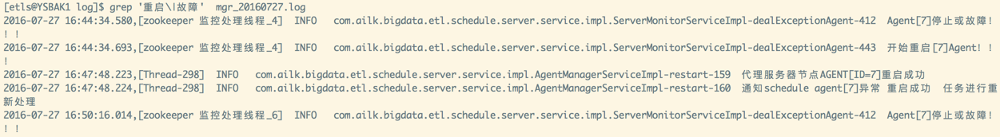
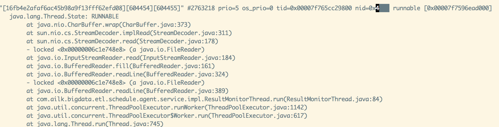
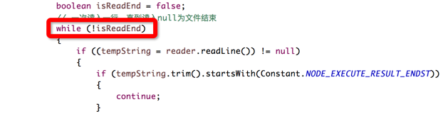
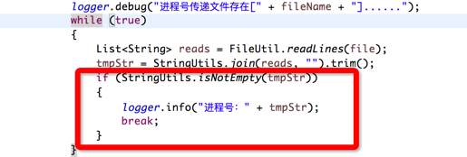
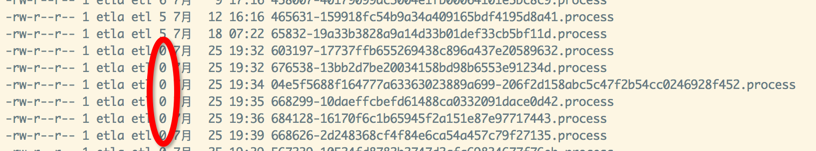
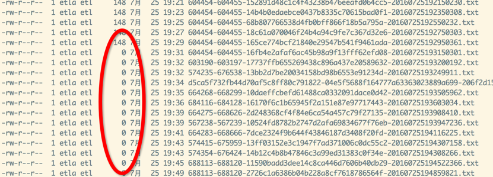

6.关于2016.07.27北京移动165节点故障的原因分析
问题描述：165agent节点部分任务状态异常。
a.原因分析：
最终zk断连的原因定位为，部分job的过程文件生成为空，导致部分线程死循环，最终导致zk线程消息发不出去。1.查看server端日志：
grep '重启\|故障' mgr_20160727.log
2.AGENT网络正常，但CPU很高：
165节点cpu一直很高，2000%以上［32核］
持续高最终结果就是 agent 和zk断连［zk线程无法发送消息给zk集群］，server在agent断连会挂起该agent上所有JOB。
部分JOB配置失败告警，因此客户有感知。b.解决办法：
1.查看java中的线程，找出占cpu高的线程：
ps mp 5953 -o THREAD,tid将cpu高的线程ID记录下来，将该ID转换成16进制
2.打印java进程的堆栈：
jstack 4953 查看该线程位置［线程忙除了死锁外，基本上可以认为程序逻辑有问题，如死循环］： 
3.排查程序发现以下部分逻辑问题，进入死循环：
(1).如果node结果文件内容为空：
ResultMonitorThread 84行 
(2).processid文件为空：
NodeRunServiceImpl.getProcessId 806行 
程序为什么或什么情况会有空文件，还需要继续定位［可能的情况有运行程序执行挂起操作等］ 考虑到不能随意启停agent，可以暂时通过手动写内容到文件中，使线程退出循环。   因此维护在cpu高的情况下 要重点监控下 tmp 目录下的process文件 和runlog下的 空文件，如果发现有空文件，确认问题后手工处理掉。